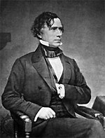

|

|

|
|
|
Lawyer, soldier, and the fourteenth president of the United
States, Franklin Pierce was born on November 23, 1804 in New
Hampshire. Pierce graduated from Bowdoin College in Maine,
and in 1827 he began practicing law in New Hampshire. Pierce
was a staunch Democrat, and a great admirer of President
Andrew Jackson. His early political career was very
successful. He served as a member of the New Hampshire state
legislature, and then the United States Congress from
1833-1842, first as a representative and then a senator.
Pierce's political principles were those of the
Democratic Party he loved. He was a strong supporter of
limited government, economy and efficiency in the federal
budget, and states' rights. He was a fierce patriot who
detested the rising Northern abolitionist movement as a
threat to the sectional harmony he was determined to
preserve. Married and with a growing family, Pierce resigned
from the Senate in 1842. He returned to New Hampshire to a
thriving legal practice, but remained a major force in his
state's Democratic Party.
In the Mexican War (1846-1848), President James K. Polk
appointed Pierce first as a colonel, then as a brigadier
general. His military career was brief and undistinguished,
and he happily left the Army to go back to New Hampshire.
Pierce was prominent in supporting the Compromise of 1850,
and especially the Fugitive Slave Law, the most
controversial part of the compromise. Pierce became known as
a "doughface," that is, a Northern man with Southern
sympathies. His support did not go unnoticed in the South,
and when the 1852 Democratic Convention deadlocked, Southern
politicians propelled Pierce's candidacy to a successful
conclusion. Pierce won the presidency by a small margin.
Pierce assumed office in a period of great turmoil. His
major goals were to continue the expansion of United States
territory and to avoid sectional controversy. He achieved a
limited measure of success in the former, and failed
miserably in the latter. Under his administration the
Gadsden Purchase (1853) was negotiated, adding greatly to
the nation's Southwest territory. The issue of slavery,
however, once again threatened the stability of the country
when Senator Stephen Douglas of Illinois pushed the
Kansas-Nebraska Act of 1854 through Congress. The Act
superseded the Missouri Compromise, and threw open all the
territories to popular sovereignty. Soon, massive voting
fraud and violent clashes between pro-slavery and free-labor
men demanded presidential intervention.
Pierce did not demonstrate strong leadership in handling
the major crisis of his presidency. A weak, indecisive man,
he favored the South over the North in Kansas and elsewhere,
and helped to set in motion a chain of events that led to
the Civil War. By 1855, Pierce's many blunders had alienated
Americans and made his re-nomination impossible. Pierce died
in obscurity in Concord, New Hampshire on October 8, 1869.
Source: Joan Waugh, ed., Facts on File Encyclopedia of American
History: Civil War and Reconstruction, 1856 to 1869 (New York: Facts on
File, 2003), 275.
|